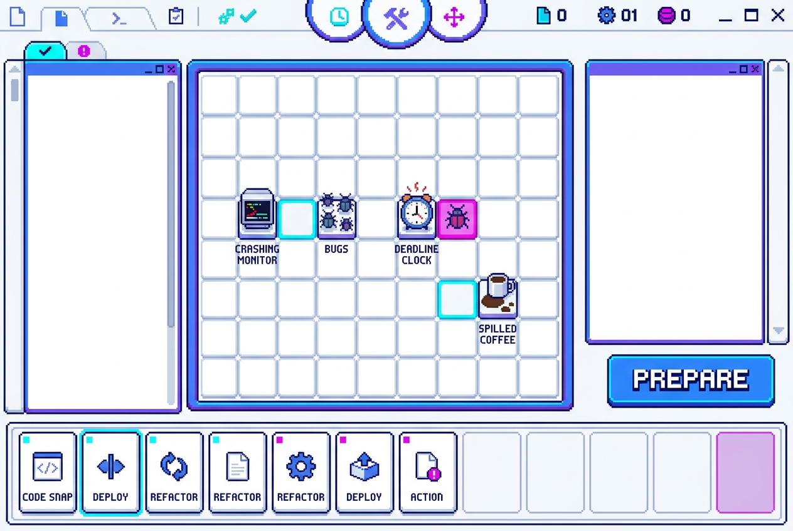
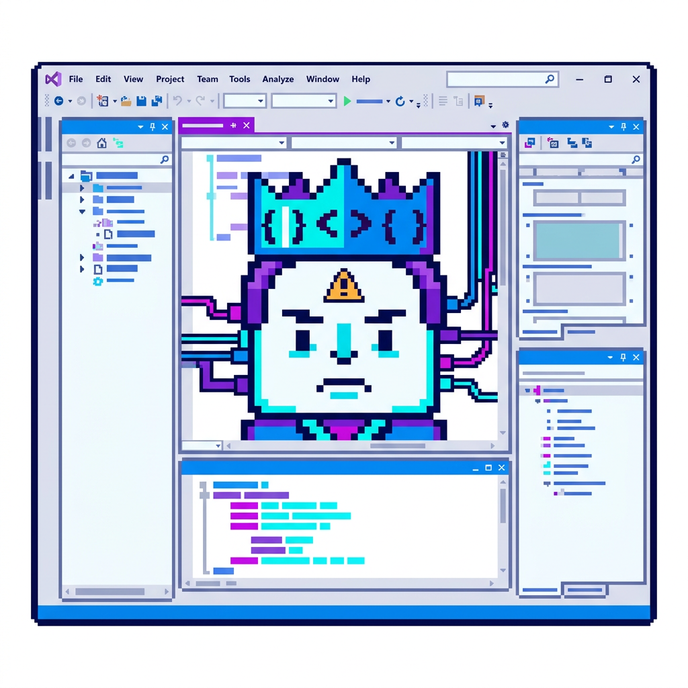
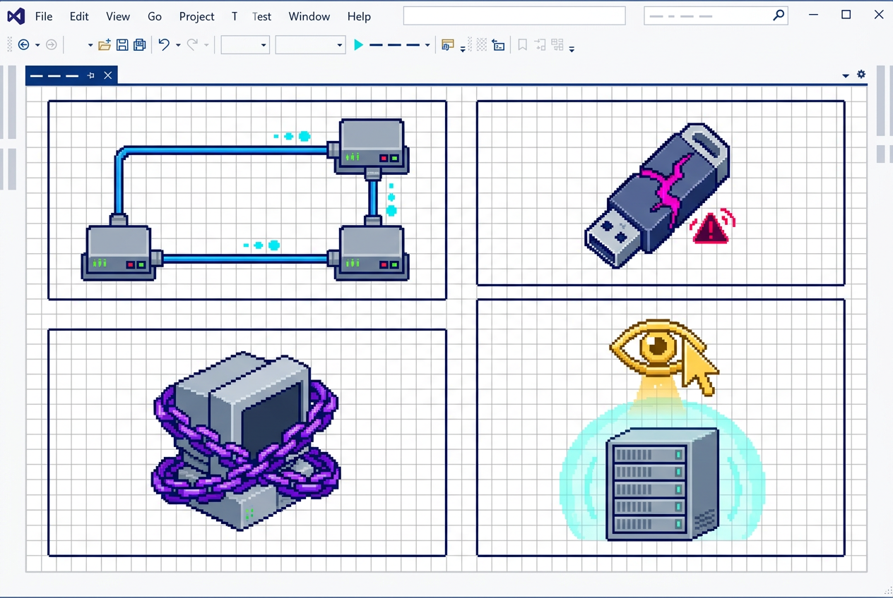
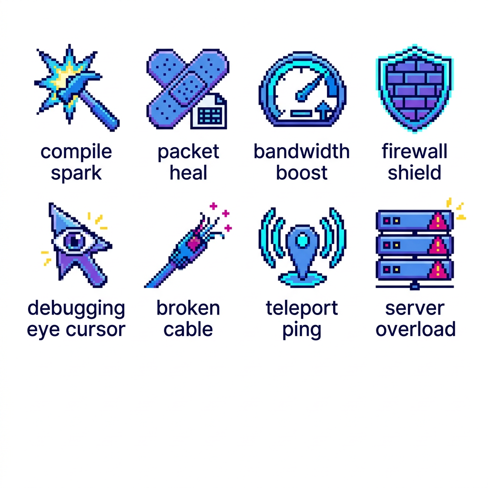
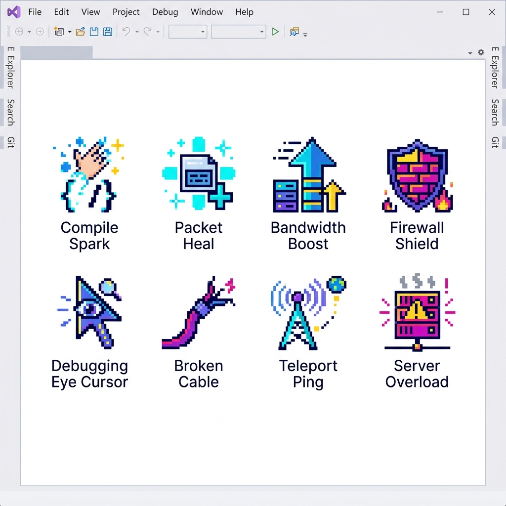

围棋史莱姆 · 美术资源需求清单 Style：Abstract Comedy · Sci-Fi · Pixel Art
配套 玩法拓展策划案 v17。按模块列出当前还缺的美术，标注规格、优先级、来源（复用 / AI 生成 / 手工 / 程序化）， 以及对应的命名规范。可以直接当美术任务单，也可以当 AI 出图的任务队列。
01风格基准与交付规格（先读这个）
所有资源都必须满足这一节，否则进 Unity 会对不齐、大小不一、图集爆掉。
风格基准
- 抽象搞笑：把路由器、打印机、插线板、微波炉、U 盘、光标等日常科技物件拟人化，允许比例失真、表情夸张和荒诞组合。
- 科技感：像素化的 Wi-Fi 波纹、加载圈、警告贴纸、数据线、故障提示、扫描框，不使用写实机械结构。
- 像素：棋子基准 32×32 像素（像素比 1:1），UI 允许 16~32px 细节，不做 3D 渲染、不做透视场景。
- 配色：VS2026 现代白色工作区 + 浅灰面板，Visual Studio 蓝为主色，搭配青 / 紫 / 品红 / 黄色状态色，深蓝灰像素描边，最多 4 个主色 + 1 个高亮色。
- 轮廓优先：正面或俯视 2D 轮廓必须一眼认得出单位功能，表情比材质更重要。
交付规格（硬性）
| 棋子单帧 | 32×32 / 64×64 / 96×96 |
| Pixels Per Unit | 32（1 格 = 32px） |
| 大棋子 | 2×2 = 64×64 · 3×3 = 96×96 |
| 锚点 | 脚底中心 |
| UI 九宫格 | 四边边距 ≥ 8px |
| 图集 | SpriteAtlas 1024 / 2048 |
| 透明通道 | 必须带 Alpha，禁止白底 |
命名规范（沿用现有 ArtRes 的中文体系）
| 类型 | 命名模板 | 示例 |
|---|---|---|
| 棋子 | 棋子_阵营_兵种_星级_用途_序号.png | 棋子_玩家方_剑士_3星_待机_01.png |
| 大棋子 | 棋子_阵营_兵种_3星_大棋_2x2_序号.png | 棋子_敌方_Boss_终局_大棋_3x3.png |
| 状态标记 | 标记_名称_颜色.png | 标记_眼_金色.png / 标记_围困_锁链.png |
| 走法提示 | 提示_走法_兵马车炮士.png | 提示_走法_马_日字.png |
| UI | UI_模块_部件_状态.png | UI_手牌栏_卡牌底_默认.png |
| 图标 | 图标_模块_名称.png | 图标_事件_补眼.png |
| 特效 | 特效_名称_序号.png | 特效_弹道_火_01.png |
02棋子（玩家方 / 敌方）P0
现有 65 个角色 × 3 档立绘是卡通史莱姆风，需要整体换成抽象搞笑科技像素风。构图与帧序可以参考，但不再保留史莱姆外形；优先改成拟人化科技杂物、符号构装体和荒诞机器人。
| 资源 | 规格 | 数量 | 来源 | 说明 |
|---|---|---|---|---|
| 1★ 棋子立绘（待机帧） | 32×32 × 3 帧 | 19 系 × 3 | AI 重绘 | 基于现有立绘做 img2img，denoise ≤ 0.5 保证三帧对齐 |
| 2★ 棋子立绘（待机帧） | 32×32 × 3 帧 | 19 系 × 3 | AI 重绘 | 同上，装备与体型略升级 |
| 3★ 棋子立绘（待机帧） | 64×64 × 3 帧 | 19 系 × 3 | AI + 手工 | 3★ 占 2×2，分辨率翻倍，需要手工检查像素对齐 |
| 敌方配色变体 | 同上 | 全部 | 程序化 | 不重绘，用色相偏移 / 换阵营主色，脚本批量出 |
| 攻击 / 受击 / 死亡帧 | 同星级 | 按需 | 骨骼动画 | 不逐帧画：一张关键帧 + Spine / Unity 2D IK，动作随便加且 2×2 / 3×3 不糊 |
| 棋子底座（石台） | 32 / 64 / 96 | 3 | AI 生成 | 像素化科技底座，按星级增加天线、警示贴纸和荧光灯条 |
03Boss 与大棋子P0
Boss 是每章第 11 回合的唯一视觉焦点，也是"擒王"的靶子，必须一眼认出。
| 资源 | 规格 | 数量 | 来源 | 说明 |
|---|---|---|---|---|
| Boss 大棋子（2×2） | 64×64 × 3 帧 | 6 章 × 1 | AI 生成 | 每章一个主题（暴走打印机 / 乱码路由器 / 机械微波炉 / 电池巨兽…） |
| Boss 大棋子（3×3） | 96×96 × 3 帧 | 6 章 × 1 | AI + 手工 | 第 5、6 章使用，体量占棋盘 1/9 |
| 王冠图标 | 24×24 | 1 | AI 生成 | 悬浮在 Boss 头顶，金框深底，血条最粗 |
| Boss 专属底座 / 光环 | 96×96 | 2 | AI 生成 | 黑曜石底座 + 暗红光环 |
| Boss 血条框 | 长条九宫格 | 1 | 手工 | 明显粗于普通棋子血条 |
04战斗状态标记（围棋内核的"看得见"）P0
四件套（连 / 断 / 围 / 眼）全部只靠颜色和图标，不出文字。这一组是性价比最高的一批资源，量小、作用大。
| 资源 | 规格 | 数量 | 来源 | 说明 |
|---|---|---|---|---|
| 标记_眼_金色 | 24×24 | 1 | AI 生成 | 空点上浮的金色「眼」字 / 眼形徽记 |
| 标记_活棋_光环 | 96×96 | 1 | AI 生成 | 两眼棋块的罩圈 |
| 标记_围困_锁链 | 32×32 | 1 | AI 生成 | 棋子变灰 + 锁链环 |
| 标记_叫吃_脉冲 | 32×32 × 3 帧 | 1 | AI 生成 | 气 = 1 的红色脉冲 |
| 标记_连_金色连线 | 32×32 线段 | 4 方向 | AI 生成 | 同块棋子之间的金色连线（上下左右各一段） |
| 标记_断_红色裂痕 | 24×24 | 1 | AI 生成 | 孤棋脚下的裂痕 |
| 气数小圆点 | 8×8 | 4 色 | 手工 | 脚下显示气数，极小 |
05走法提示（象棋借入的那一套）P1
走法全部用线框 / 虚影，零新立绘。量小但决定"自动移动能不能被读懂"。
| 资源 | 规格 | 数量 | 来源 | 说明 |
|---|---|---|---|---|
| 提示_走法_兵（向前箭头） | 32×32 | 1 | 手工 | 近战 |
| 提示_走法_马（日字虚影） | 96×96 | 1 | 手工 | 刺客 |
| 提示_走法_车（十字直线） | 96×96 | 1 | 手工 | 弓箭 / 法师 |
| 提示_炮架图标 | 24×24 | 1 | AI 生成 | 法师隔子打的"炮架"标记 |
| 提示_士象（半场高亮） | 整块 | 1 | 手工 | 牧师 / 补给车的活动范围 |
| 占格虚影（2×2 / 3×3） | 64 / 96 | 2 | 手工 | 落子预览，放不下要能变红 |
06棋盘与地形P0
| 资源 | 规格 | 数量 | 来源 | 说明 |
|---|---|---|---|---|
| 棋盘底图（石制 9×9） | 288×288 | 2 套主题 | AI 生成 | 纯 2D 科技网格 / 彩色平面棋盘；格子线必须清晰 |
| 中线（河界） | 288×8 | 1 | 手工 | 兵"过河"的可视化分界 |
| 可落子高亮 / 不可落红框 | 32×32 | 2 | 手工 | 配合占格虚影 |
| 敌方布阵半场标记 | 整块 | 1 | 手工 | 准备阶段亮敌方布阵时的高亮 |
| 背景（战斗场景） | 1920×1080 | 6 章 × 1 | AI 生成 | 故障屏幕 / 像素桌面 / 彩色数据网格…每章一张 2D 平面背景 |
07战斗 UIP0
三段式回合（准备 / 战斗 / 结算）需要一套全新的 HUD，这是目前缺口最大的一块。
| 资源 | 规格 | 数量 | 来源 | 说明 |
|---|---|---|---|---|
| 手牌栏底框 | 九宫格 | 1 | AI 生成 | 羊皮纸 / 铁艺边框，可容纳 2~4 张 |
| 卡牌底框（默认 / 选中） | 96×128 九宫格 | 2 | AI 生成 | 要能标注 2×2 / 3×3 占格 |
| 回合 HUD（章进度 + 回合 N/11） | 横条 | 1 | 手工 | 顶部进度条 |
| 阶段指示（准备 / 战斗 / 结算） | 3 态图标 | 3 | AI 生成 | 当前阶段高亮 |
| 「准备」按钮 | 九宫格 · 2 态 | 2 | AI 生成 | 全 UI 最显眼的一个按钮 |
| 决死加速 HUD | 图标 + 数字 | 1 | AI 生成 | 沙漏 / 骷髅，叠加层数显示 |
| 三选一界面整套 | 弹窗 + 3 卡 | 1 套 | AI 生成 | 可复用现有 tanchuang 的九宫格换材质 |
| 战斗日志 / 事件弹条 | 九宫格 | 1 | AI 生成 | 战斗事件弹出用 |
08战斗事件图标（8 个）P0
规格统一 48×48，纯 2D 像素，白色 / 浅灰底、深蓝灰描边、Visual Studio 蓝与青紫状态色块。这套图标最适合用 AI 直接出图，禁止黑色主题、3D 场景与透视空间。
| 图标 | 视觉要点 | 稀有度 |
|---|---|---|
| 天降援兵 | 光柱落下一颗棋子 | 普通 |
| 回气 | 蓝色气团环绕棋子 | 普通 |
| 疗愈雨 | 绿色雨滴 + 十字 | 普通 |
| 连击 | 双剑交叉 + 速度线 | 普通 |
| 补眼 稀有 | 金色眼形 + 棋子嵌入 | 稀有 |
| 断链 稀有 | 被劈断的铁链 | 稀有 |
| 瞬移潮 稀有 | 传送门 + 双箭头 | 稀有 |
| 炮火支援 稀有 | 下落的火球阵 | 稀有 |
09三选一奖励图标（4 类）P0
| 图标 | 视觉要点 | 规格 |
|---|---|---|
| 新棋子 | 未开封的棋子剪影 + 问号 | 48×48 |
| 同名牌 | 两张重叠的相同棋子 | 48×48 |
| 眼位石 | 金色眼形宝石 | 48×48 |
| 全队强化 | 向上的金箭 + 光环 | 48×48 |
10特效与弹道（复用 + 变体）P1
现有 atan 里已有火 / 水 / 光弹道、暗紫法阵、下落特效。这批不用重画，做两件事：① 调成故障科技的荧光色；② 程序化生成属性变体（火＝品红、水＝青、光＝黄、暗＝紫）。
| 资源 | 规格 | 数量 | 来源 | 说明 |
|---|---|---|---|---|
| 弹道变体（火 / 水 / 光 / 暗） | 5 帧序列 | 4 属性 | 程序化 | 色相偏移批量出 |
| 法阵特效变体 | 13 帧序列 | 3 色 | 程序化 | 同上 |
| 提子 / 围困破碎特效 | 6 帧 | 1 | AI 生成 | 金色眼碎裂、锁链崩断 |
| 三合一升星光效 | 8 帧 | 1 | AI 生成 | 升到 3★"长个儿"时的光柱 |
11局外（图鉴 / 主城 / 难度徽章）P1
| 资源 | 规格 | 数量 | 来源 | 说明 |
|---|---|---|---|---|
| 主城 / 主菜单背景 | 1920×1080 | 1 | AI 生成 | 抽象像素桌面 / 故障科技控制台 / 巨大电脑窗口 |
| 图鉴格子 + 未解锁剪影 | 64×64 | 2 | 手工 | 65 格通用 |
| 难度阶级徽章（普通/困难/噩梦） | 48×48 | 3 | AI 生成 | 铜 / 银 / 金 |
| 无尽模式入口图标 | 48×48 | 1 | AI 生成 |
12制作优先级与分工
P0 · 没有就玩不了（约 1 周）
- 战斗 UI 全套（§07）
- 战斗状态标记（§04）
- 棋子 1★ / 2★ 重绘（§02）
- 棋盘 + 战斗事件图标（§06 / §08）
- 三选一图标（§09）
P1 / P2 · 让它变好
- 3★ / Boss 大棋子（§02 / §03）
- 走法提示线框（§05）
- 特效变体（§10，程序化）
- 局外图鉴 / 主城 / 徽章（§11）
- 攻击 / 受击 / 死亡骨骼动画（§02）
一句话：先做"看得见的规则"（标记 / HUD / 图标，量小作用大），再做"看得见的强度"（棋子 / Boss 重绘），最后做"看得见的爽"（特效 / 动画）。
13概念图（AI 生成 · 风格探索稿）
以下为 AI 生成的风格探索稿，用于定"抽象搞笑 + 科技 + 2D 像素"的方向，不是最终资源。所有概念图都采用平面 2D 构图，不使用 3D 场景、透视空间或史莱姆造型。





